terraform {
required_version = ">= 1.0"
backend "local" {} # Can change from "local" to "gcs" (for google) or "s3" (for aws), if you would like to preserve your tf-state online
required_providers {
google = {
source = "hashicorp/google"
}
}
}
provider "google" {
project = var.project
region = var.region
// credentials = file(var.credentials) # Use this if you do not want to set env-var GOOGLE_APPLICATION_CREDENTIALS
}
# Data Lake Bucket
# Ref: https://registry.terraform.io/providers/hashicorp/google/latest/docs/resources/storage_bucket
resource "google_storage_bucket" "data-lake-bucket" {
name = "${local.data_lake_bucket}_${var.project}" # Concatenating DL bucket & Project name for unique naming
location = var.region
# Optional, but recommended settings:
storage_class = var.storage_class
uniform_bucket_level_access = true
versioning {
enabled = true
}
lifecycle_rule {
action {
type = "Delete"
}
condition {
age = 30 // days
}
}
force_destroy = true
}
# DWH
# Ref: https://registry.terraform.io/providers/hashicorp/google/latest/docs/resources/bigquery_dataset
resource "google_bigquery_dataset" "dataset" {
dataset_id = var.BQ_DATASET
project = var.project
location = var.region
}DE Zoomcamp - Final Project
Spotify 1.2 million - Project Overview
It’s time to pull everything together I’ve learned during this course and complete an end to end data pipeline project. As a musician I decided to chose a dataset of personal interest to me :
- audio features of over 1.2 million songs obtained with the Spotify API
Acknowledgements to Rodolfo Figueroa for curating the dataset. Kaggle assigned the dataset a solid Usability score of 8.24 which is a good starting point. Whilst this is primarily a data engineering project I will also be carrying out some data pre-processing.
Data logistics is no different from any other form of logistics, in that it will not be possible to move our data from source, in my case a raw csv file held on Kaggle to destination, in my case Looker Studio without a few bumps along the way. But by carrying out some preliminary data exploration, and harnessing workflow orchestration tools, we can make the journey as smooth as possible.
So sit back and enjoy the ride ;)
0. Project architecture & technologies
Outlined below is an overview of the architecture and technologies that I will be using to unveil some insights from the raw data.
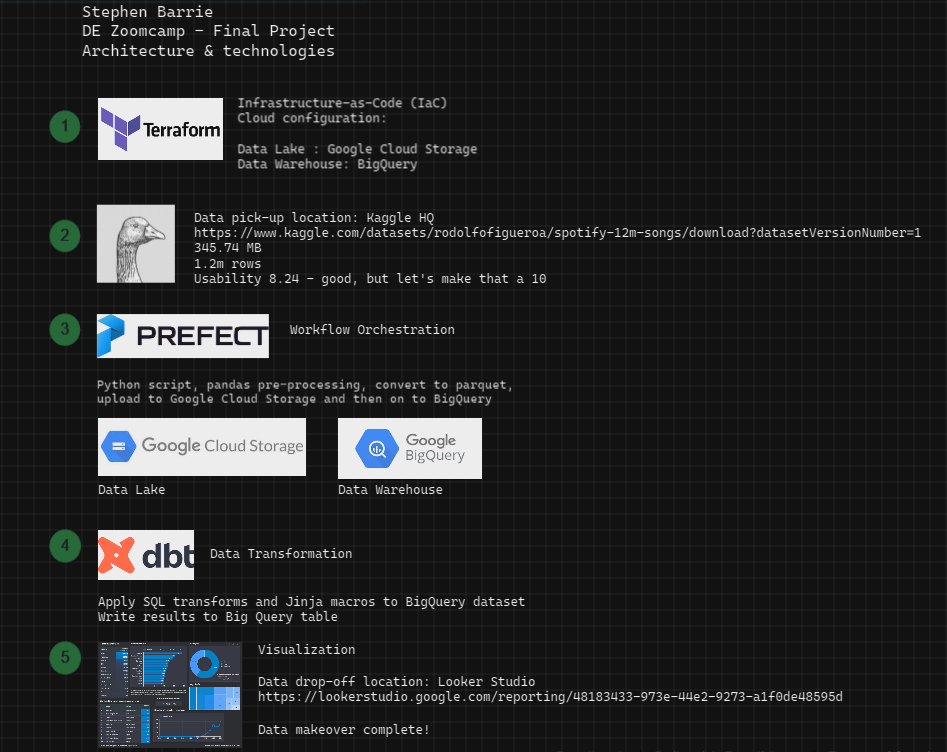
1. Set up & configuration
Reproducability
I use Unbuntu on Windows 20.04.5 and like to run things locally from the command line wherever possible, however this project does make use of cloud applications.
A pre-requisite for reproducability of this project is having a Google Cloud account. I set mine up at the beginning of this course. You can follow these instructions to get up and running.
For the purposes of this specific project, I used Terraform (Infrastructure-as-Code) to automate my cloud resources configuration. I had already set this up locally at the beginning of the course and so only required the following two files to configure my data bucket in Google Cloud Storage, and my Data Warehouse, BigQuery.
main.tf
variables.tf
locals {
data_lake_bucket = "spotify"
}
variable "project" {
description = "de-zoomcamp-project137"
}
variable "region" {
description = "Region for GCP resources. Choose as per your location: https://cloud.google.com/about/locations"
default = "europe-west6"
type = string
}
variable "storage_class" {
description = "Storage class type for your bucket. Check official docs for more info."
default = "STANDARD"
}
variable "BQ_DATASET" {
description = "BigQuery Dataset that raw data (from GCS) will be written to"
type = string
default = "spotify"
}Once you have configured these files you can simply run the following prompts from the command line :
Refresh service-account’s auth-token for this session :
gcloud auth application-default loginInitialize state file :
terraform initCheck changes to new infra plan :
terraform plan -var="project=<your-gcp-project-id>"Asks for approval to the proposed plan, and applies changes to cloud :
terraform applyFor further assistance refer to this detailed guide on Local Setup for Terraform and GCP.
2. Data-pick up & preproceesing
I was unable to download the file using the link address to the file on Kaggle :
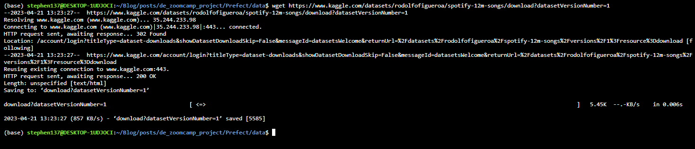
As a workaround I resorted to clicking on the Download icon to save the file locally. We can access the file size (memory) and number of rows from the command line using the following commands :
du -h <file_name>
wc -l <file_name> 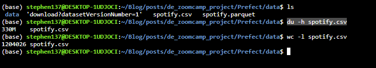
Let’s get to know our data :
import pandas as pd
df = pd.read_csv('Prefect/data/spotify.csv')
df.head()| id | name | album | album_id | artists | artist_ids | track_number | disc_number | explicit | danceability | ... | speechiness | acousticness | instrumentalness | liveness | valence | tempo | duration_ms | time_signature | year | release_date | |
|---|---|---|---|---|---|---|---|---|---|---|---|---|---|---|---|---|---|---|---|---|---|
| 0 | 7lmeHLHBe4nmXzuXc0HDjk | Testify | The Battle Of Los Angeles | 2eia0myWFgoHuttJytCxgX | ['Rage Against The Machine'] | ['2d0hyoQ5ynDBnkvAbJKORj'] | 1 | 1 | False | 0.470 | ... | 0.0727 | 0.02610 | 0.000011 | 0.3560 | 0.503 | 117.906 | 210133 | 4.0 | 1999 | 1999-11-02 |
| 1 | 1wsRitfRRtWyEapl0q22o8 | Guerrilla Radio | The Battle Of Los Angeles | 2eia0myWFgoHuttJytCxgX | ['Rage Against The Machine'] | ['2d0hyoQ5ynDBnkvAbJKORj'] | 2 | 1 | True | 0.599 | ... | 0.1880 | 0.01290 | 0.000071 | 0.1550 | 0.489 | 103.680 | 206200 | 4.0 | 1999 | 1999-11-02 |
| 2 | 1hR0fIFK2qRG3f3RF70pb7 | Calm Like a Bomb | The Battle Of Los Angeles | 2eia0myWFgoHuttJytCxgX | ['Rage Against The Machine'] | ['2d0hyoQ5ynDBnkvAbJKORj'] | 3 | 1 | False | 0.315 | ... | 0.4830 | 0.02340 | 0.000002 | 0.1220 | 0.370 | 149.749 | 298893 | 4.0 | 1999 | 1999-11-02 |
| 3 | 2lbASgTSoDO7MTuLAXlTW0 | Mic Check | The Battle Of Los Angeles | 2eia0myWFgoHuttJytCxgX | ['Rage Against The Machine'] | ['2d0hyoQ5ynDBnkvAbJKORj'] | 4 | 1 | True | 0.440 | ... | 0.2370 | 0.16300 | 0.000004 | 0.1210 | 0.574 | 96.752 | 213640 | 4.0 | 1999 | 1999-11-02 |
| 4 | 1MQTmpYOZ6fcMQc56Hdo7T | Sleep Now In the Fire | The Battle Of Los Angeles | 2eia0myWFgoHuttJytCxgX | ['Rage Against The Machine'] | ['2d0hyoQ5ynDBnkvAbJKORj'] | 5 | 1 | False | 0.426 | ... | 0.0701 | 0.00162 | 0.105000 | 0.0789 | 0.539 | 127.059 | 205600 | 4.0 | 1999 | 1999-11-02 |
5 rows × 24 columns
On first look the dataset appears to be fairly clean - the artists name are wrapped in [' '] and some of the values for track features are taken to a large number of decimal places. We’ll include these clean up as a flow as part of a data ingestion script using Prefect which will read the csv, convert to parquet format, and upload to Google Cloud Storage.
df.info()<class 'pandas.core.frame.DataFrame'>
RangeIndex: 1204025 entries, 0 to 1204024
Data columns (total 24 columns):
# Column Non-Null Count Dtype
--- ------ -------------- -----
0 id 1204025 non-null object
1 name 1204025 non-null object
2 album 1204025 non-null object
3 album_id 1204025 non-null object
4 artists 1204025 non-null object
5 artist_ids 1204025 non-null object
6 track_number 1204025 non-null int64
7 disc_number 1204025 non-null int64
8 explicit 1204025 non-null bool
9 danceability 1204025 non-null float64
10 energy 1204025 non-null float64
11 key 1204025 non-null int64
12 loudness 1204025 non-null float64
13 mode 1204025 non-null int64
14 speechiness 1204025 non-null float64
15 acousticness 1204025 non-null float64
16 instrumentalness 1204025 non-null float64
17 liveness 1204025 non-null float64
18 valence 1204025 non-null float64
19 tempo 1204025 non-null float64
20 duration_ms 1204025 non-null int64
21 time_signature 1204025 non-null float64
22 year 1204025 non-null int64
23 release_date 1204025 non-null object
dtypes: bool(1), float64(10), int64(6), object(7)
memory usage: 212.4+ MBdf.info gives us the number of entries, in our case 1,204,025, columns 24, number of non-null entries for each column (in our case same as number of entries, so no NULL values), and the datatype for each column.
It is vital to ensure that the data is in the correct format for our analytics project. Off the bat, I can see that the year and release_date datatypes will need to be converted to a date type.
df.describe()| track_number | disc_number | danceability | energy | key | loudness | mode | speechiness | acousticness | instrumentalness | liveness | valence | tempo | duration_ms | time_signature | year | |
|---|---|---|---|---|---|---|---|---|---|---|---|---|---|---|---|---|
| count | 1.204025e+06 | 1.204025e+06 | 1.204025e+06 | 1.204025e+06 | 1.204025e+06 | 1.204025e+06 | 1.204025e+06 | 1.204025e+06 | 1.204025e+06 | 1.204025e+06 | 1.204025e+06 | 1.204025e+06 | 1.204025e+06 | 1.204025e+06 | 1.204025e+06 | 1.204025e+06 |
| mean | 7.656352e+00 | 1.055906e+00 | 4.930565e-01 | 5.095363e-01 | 5.194151e+00 | -1.180870e+01 | 6.714595e-01 | 8.438219e-02 | 4.467511e-01 | 2.828605e-01 | 2.015994e-01 | 4.279866e-01 | 1.176344e+02 | 2.488399e+05 | 3.832494e+00 | 2.007328e+03 |
| std | 5.994977e+00 | 2.953752e-01 | 1.896694e-01 | 2.946839e-01 | 3.536731e+00 | 6.982132e+00 | 4.696827e-01 | 1.159914e-01 | 3.852014e-01 | 3.762844e-01 | 1.804591e-01 | 2.704846e-01 | 3.093705e+01 | 1.622104e+05 | 5.611826e-01 | 1.210117e+01 |
| min | 1.000000e+00 | 1.000000e+00 | 0.000000e+00 | 0.000000e+00 | 0.000000e+00 | -6.000000e+01 | 0.000000e+00 | 0.000000e+00 | 0.000000e+00 | 0.000000e+00 | 0.000000e+00 | 0.000000e+00 | 0.000000e+00 | 1.000000e+03 | 0.000000e+00 | 0.000000e+00 |
| 25% | 3.000000e+00 | 1.000000e+00 | 3.560000e-01 | 2.520000e-01 | 2.000000e+00 | -1.525400e+01 | 0.000000e+00 | 3.510000e-02 | 3.760000e-02 | 7.600000e-06 | 9.680000e-02 | 1.910000e-01 | 9.405400e+01 | 1.740900e+05 | 4.000000e+00 | 2.002000e+03 |
| 50% | 7.000000e+00 | 1.000000e+00 | 5.010000e-01 | 5.240000e-01 | 5.000000e+00 | -9.791000e+00 | 1.000000e+00 | 4.460000e-02 | 3.890000e-01 | 8.080000e-03 | 1.250000e-01 | 4.030000e-01 | 1.167260e+02 | 2.243390e+05 | 4.000000e+00 | 2.009000e+03 |
| 75% | 1.000000e+01 | 1.000000e+00 | 6.330000e-01 | 7.660000e-01 | 8.000000e+00 | -6.717000e+00 | 1.000000e+00 | 7.230000e-02 | 8.610000e-01 | 7.190000e-01 | 2.450000e-01 | 6.440000e-01 | 1.370460e+02 | 2.858400e+05 | 4.000000e+00 | 2.015000e+03 |
| max | 5.000000e+01 | 1.300000e+01 | 1.000000e+00 | 1.000000e+00 | 1.100000e+01 | 7.234000e+00 | 1.000000e+00 | 9.690000e-01 | 9.960000e-01 | 1.000000e+00 | 1.000000e+00 | 1.000000e+00 | 2.489340e+02 | 6.061090e+06 | 5.000000e+00 | 2.020000e+03 |
This gives us a very useful overview of our dataset and can highlight anomalies worthy of further investigation. min and max in particular allow us to make a very quick sense check of the range of the data, and might unveil potential outliers.
Take a look at our year column - the range of values are 0 to 2020. So, it looks like imputed values have been used where information was not available. This may cause problems later when we attempt to convert the datatype for year which is currently int64.
We can use .iloc to access a group of rows and columns by index or .loc to access a group of rows and columns by name :
df.loc[df['year'] == 0 ]| id | name | album | album_id | artists | artist_ids | track_number | disc_number | explicit | danceability | ... | speechiness | acousticness | instrumentalness | liveness | valence | tempo | duration_ms | time_signature | year | release_date | |
|---|---|---|---|---|---|---|---|---|---|---|---|---|---|---|---|---|---|---|---|---|---|
| 815351 | 035h5flqzwF6I5CTfsdHPA | Jimmy Neutron | Optimism 2 | 211vSdhxt58A943r9QWRKo | ['iCizzle'] | ['7arv4matK2uKJrdtPSxU4i'] | 1 | 1 | False | 0.795 | ... | 0.0519 | 0.01560 | 0.439 | 0.0860 | 0.389 | 109.985 | 183000 | 4.0 | 0 | 0000 |
| 815352 | 49x05fLGDKCsCUA7CG0VpY | I Luv You | Optimism 2 | 211vSdhxt58A943r9QWRKo | ['iCizzle'] | ['7arv4matK2uKJrdtPSxU4i'] | 2 | 1 | False | 0.762 | ... | 0.0950 | 0.88700 | 0.909 | 0.1060 | 0.728 | 92.962 | 145161 | 4.0 | 0 | 0000 |
| 815353 | 4mNLlSoZOqoPauBAF3bIpx | My Heart | Optimism 2 | 211vSdhxt58A943r9QWRKo | ['iCizzle'] | ['7arv4matK2uKJrdtPSxU4i'] | 3 | 1 | False | 0.671 | ... | 0.0662 | 0.00956 | 0.902 | 0.0455 | 0.893 | 97.865 | 176561 | 4.0 | 0 | 0000 |
| 815354 | 7w5iwI0wnIiopbCFNe1Txo | I Am (Invincible) | Optimism 2 | 211vSdhxt58A943r9QWRKo | ['iCizzle'] | ['7arv4matK2uKJrdtPSxU4i'] | 4 | 1 | False | 0.759 | ... | 0.1280 | 0.00544 | 0.895 | 0.0538 | 0.537 | 89.989 | 192000 | 4.0 | 0 | 0000 |
| 815355 | 2Tfy2R2uiWVwxHQUT6oGNp | Flower Power | Optimism 2 | 211vSdhxt58A943r9QWRKo | ['iCizzle'] | ['7arv4matK2uKJrdtPSxU4i'] | 5 | 1 | False | 0.657 | ... | 0.2810 | 0.01800 | 0.245 | 0.2410 | 0.964 | 179.904 | 138666 | 4.0 | 0 | 0000 |
| 815356 | 05cTbSPQyha6z7opYwH67O | Heard It Low | Optimism 2 | 211vSdhxt58A943r9QWRKo | ['iCizzle'] | ['7arv4matK2uKJrdtPSxU4i'] | 6 | 1 | False | 0.728 | ... | 0.0673 | 0.00785 | 0.275 | 0.0865 | 0.662 | 90.010 | 138667 | 4.0 | 0 | 0000 |
| 815357 | 1fYK5xB8csOXVEqApkzzm0 | Hangin On | Optimism 2 | 211vSdhxt58A943r9QWRKo | ['iCizzle'] | ['7arv4matK2uKJrdtPSxU4i'] | 7 | 1 | False | 0.822 | ... | 0.0758 | 0.11500 | 0.881 | 0.1210 | 0.766 | 119.998 | 142620 | 4.0 | 0 | 0000 |
| 815358 | 4G51c7cWzB6CLaRq9sYj2w | God Loves You | Optimism 2 | 211vSdhxt58A943r9QWRKo | ['iCizzle'] | ['7arv4matK2uKJrdtPSxU4i'] | 8 | 1 | False | 0.845 | ... | 0.0662 | 0.00274 | 0.548 | 0.0393 | 0.472 | 120.090 | 161000 | 4.0 | 0 | 0000 |
| 815359 | 45fcUAjXlzDxTwSzoUaO6l | You In My Life | Optimism 2 | 211vSdhxt58A943r9QWRKo | ['iCizzle'] | ['7arv4matK2uKJrdtPSxU4i'] | 9 | 1 | False | 0.957 | ... | 0.0623 | 0.13300 | 0.857 | 0.0968 | 0.258 | 112.987 | 214867 | 4.0 | 0 | 0000 |
| 815360 | 35TcKSN5hsGcZLrFPkUvIv | I Wonder | Optimism 2 | 211vSdhxt58A943r9QWRKo | ['iCizzle'] | ['7arv4matK2uKJrdtPSxU4i'] | 10 | 1 | False | 0.659 | ... | 0.0581 | 0.00196 | 0.854 | 0.3710 | 0.877 | 146.020 | 180822 | 4.0 | 0 | 0000 |
10 rows × 24 columns
So, the tracks from the album Optimism 2 by the artist iCizzle have been given a year value of 0. A quick internet search and we can see the year should be 2018. Now that we have located our anomalies, we can update these values using .loc :
df.loc[815351:815360,'year'] = 2018Let’s check that worked :
df.loc[815351:815360] | id | name | album | album_id | artists | artist_ids | track_number | disc_number | explicit | danceability | ... | speechiness | acousticness | instrumentalness | liveness | valence | tempo | duration_ms | time_signature | year | release_date | |
|---|---|---|---|---|---|---|---|---|---|---|---|---|---|---|---|---|---|---|---|---|---|
| 815351 | 035h5flqzwF6I5CTfsdHPA | Jimmy Neutron | Optimism 2 | 211vSdhxt58A943r9QWRKo | ['iCizzle'] | ['7arv4matK2uKJrdtPSxU4i'] | 1 | 1 | False | 0.795 | ... | 0.0519 | 0.01560 | 0.439 | 0.0860 | 0.389 | 109.985 | 183000 | 4.0 | 2018 | 0000 |
| 815352 | 49x05fLGDKCsCUA7CG0VpY | I Luv You | Optimism 2 | 211vSdhxt58A943r9QWRKo | ['iCizzle'] | ['7arv4matK2uKJrdtPSxU4i'] | 2 | 1 | False | 0.762 | ... | 0.0950 | 0.88700 | 0.909 | 0.1060 | 0.728 | 92.962 | 145161 | 4.0 | 2018 | 0000 |
| 815353 | 4mNLlSoZOqoPauBAF3bIpx | My Heart | Optimism 2 | 211vSdhxt58A943r9QWRKo | ['iCizzle'] | ['7arv4matK2uKJrdtPSxU4i'] | 3 | 1 | False | 0.671 | ... | 0.0662 | 0.00956 | 0.902 | 0.0455 | 0.893 | 97.865 | 176561 | 4.0 | 2018 | 0000 |
| 815354 | 7w5iwI0wnIiopbCFNe1Txo | I Am (Invincible) | Optimism 2 | 211vSdhxt58A943r9QWRKo | ['iCizzle'] | ['7arv4matK2uKJrdtPSxU4i'] | 4 | 1 | False | 0.759 | ... | 0.1280 | 0.00544 | 0.895 | 0.0538 | 0.537 | 89.989 | 192000 | 4.0 | 2018 | 0000 |
| 815355 | 2Tfy2R2uiWVwxHQUT6oGNp | Flower Power | Optimism 2 | 211vSdhxt58A943r9QWRKo | ['iCizzle'] | ['7arv4matK2uKJrdtPSxU4i'] | 5 | 1 | False | 0.657 | ... | 0.2810 | 0.01800 | 0.245 | 0.2410 | 0.964 | 179.904 | 138666 | 4.0 | 2018 | 0000 |
| 815356 | 05cTbSPQyha6z7opYwH67O | Heard It Low | Optimism 2 | 211vSdhxt58A943r9QWRKo | ['iCizzle'] | ['7arv4matK2uKJrdtPSxU4i'] | 6 | 1 | False | 0.728 | ... | 0.0673 | 0.00785 | 0.275 | 0.0865 | 0.662 | 90.010 | 138667 | 4.0 | 2018 | 0000 |
| 815357 | 1fYK5xB8csOXVEqApkzzm0 | Hangin On | Optimism 2 | 211vSdhxt58A943r9QWRKo | ['iCizzle'] | ['7arv4matK2uKJrdtPSxU4i'] | 7 | 1 | False | 0.822 | ... | 0.0758 | 0.11500 | 0.881 | 0.1210 | 0.766 | 119.998 | 142620 | 4.0 | 2018 | 0000 |
| 815358 | 4G51c7cWzB6CLaRq9sYj2w | God Loves You | Optimism 2 | 211vSdhxt58A943r9QWRKo | ['iCizzle'] | ['7arv4matK2uKJrdtPSxU4i'] | 8 | 1 | False | 0.845 | ... | 0.0662 | 0.00274 | 0.548 | 0.0393 | 0.472 | 120.090 | 161000 | 4.0 | 2018 | 0000 |
| 815359 | 45fcUAjXlzDxTwSzoUaO6l | You In My Life | Optimism 2 | 211vSdhxt58A943r9QWRKo | ['iCizzle'] | ['7arv4matK2uKJrdtPSxU4i'] | 9 | 1 | False | 0.957 | ... | 0.0623 | 0.13300 | 0.857 | 0.0968 | 0.258 | 112.987 | 214867 | 4.0 | 2018 | 0000 |
| 815360 | 35TcKSN5hsGcZLrFPkUvIv | I Wonder | Optimism 2 | 211vSdhxt58A943r9QWRKo | ['iCizzle'] | ['7arv4matK2uKJrdtPSxU4i'] | 10 | 1 | False | 0.659 | ... | 0.0581 | 0.00196 | 0.854 | 0.3710 | 0.877 | 146.020 | 180822 | 4.0 | 2018 | 0000 |
10 rows × 24 columns
We have successfully updated the release year to 2018. Let’s check the range of dates once more :
df.year.describe()count 1.204025e+06
mean 2.007345e+03
std 1.062889e+01
min 1.900000e+03
25% 2.002000e+03
50% 2.009000e+03
75% 2.015000e+03
max 2.020000e+03
Name: year, dtype: float64So, the minimum year is now 1900. Again, this seems like it might be another imputed value. Let’s check :
df.loc[df['year'] == 1900 ]| id | name | album | album_id | artists | artist_ids | track_number | disc_number | explicit | danceability | ... | speechiness | acousticness | instrumentalness | liveness | valence | tempo | duration_ms | time_signature | year | release_date | |
|---|---|---|---|---|---|---|---|---|---|---|---|---|---|---|---|---|---|---|---|---|---|
| 450071 | 3xPatAieFSuGIuQfHMDvSw | Arabian Waltz | Arabian Waltz | 1ggHQJ48NFfYhGu6VznK8K | ['Rabih Abou-Khalil'] | ['7cM9Y2LNnnmmqivaEuH8vT'] | 1 | 1 | False | 0.533 | ... | 0.0576 | 0.875 | 0.859 | 0.0887 | 0.8350 | 115.746 | 493867 | 3.0 | 1900 | 1900-01-01 |
| 450072 | 5vpx0WtYVtKOFu4V65NkUi | Dreams Of A Dying City | Arabian Waltz | 1ggHQJ48NFfYhGu6VznK8K | ['Rabih Abou-Khalil'] | ['7cM9Y2LNnnmmqivaEuH8vT'] | 2 | 1 | False | 0.476 | ... | 0.0334 | 0.843 | 0.893 | 0.1060 | 0.5710 | 92.340 | 730667 | 1.0 | 1900 | 1900-01-01 |
| 450073 | 0G7vBbeWCcRISsHwcivFgl | Ornette Never Sleeps | Arabian Waltz | 1ggHQJ48NFfYhGu6VznK8K | ['Rabih Abou-Khalil'] | ['7cM9Y2LNnnmmqivaEuH8vT'] | 3 | 1 | False | 0.605 | ... | 0.0457 | 0.912 | 0.693 | 0.1170 | 0.7250 | 139.820 | 421760 | 4.0 | 1900 | 1900-01-01 |
| 450074 | 6YjrfDT2TPp6pflsCSBHPH | Georgina | Arabian Waltz | 1ggHQJ48NFfYhGu6VznK8K | ['Rabih Abou-Khalil'] | ['7cM9Y2LNnnmmqivaEuH8vT'] | 4 | 1 | False | 0.406 | ... | 0.0433 | 0.849 | 0.866 | 0.1020 | 0.6200 | 93.729 | 672707 | 4.0 | 1900 | 1900-01-01 |
| 450075 | 2Nq317w5G1gmuhilTCiiqR | No Visa | Arabian Waltz | 1ggHQJ48NFfYhGu6VznK8K | ['Rabih Abou-Khalil'] | ['7cM9Y2LNnnmmqivaEuH8vT'] | 5 | 1 | False | 0.577 | ... | 0.0430 | 0.936 | 0.865 | 0.0999 | 0.5010 | 96.415 | 601027 | 4.0 | 1900 | 1900-01-01 |
| 450076 | 6PzeE7vvynVguz04STK6RL | The Pain After | Arabian Waltz | 1ggHQJ48NFfYhGu6VznK8K | ['Rabih Abou-Khalil'] | ['7cM9Y2LNnnmmqivaEuH8vT'] | 6 | 1 | False | 0.291 | ... | 0.0477 | 0.956 | 0.939 | 0.1460 | 0.0959 | 71.087 | 566840 | 3.0 | 1900 | 1900-01-01 |
| 459980 | 4DZ63H1bRMmiTcXiQhERxv | Catania | Al-Jadida | 2T6FKoeG7EXR0WAsFyXbSq | ['Rabih Abou-Khalil'] | ['7cM9Y2LNnnmmqivaEuH8vT'] | 1 | 1 | False | 0.465 | ... | 0.0742 | 0.414 | 0.089 | 0.0936 | 0.3790 | 163.939 | 465000 | 5.0 | 1900 | 1900-01-01 |
| 459981 | 6QqZn286ICbbhTjNBPlgNY | Nashwa | Al-Jadida | 2T6FKoeG7EXR0WAsFyXbSq | ['Rabih Abou-Khalil'] | ['7cM9Y2LNnnmmqivaEuH8vT'] | 2 | 1 | False | 0.436 | ... | 0.0683 | 0.802 | 0.758 | 0.1070 | 0.1580 | 171.006 | 578000 | 5.0 | 1900 | 1900-01-01 |
| 459982 | 5Mw5YkQkHuGqYQL5XMrUOI | An Evening With Jerry | Al-Jadida | 2T6FKoeG7EXR0WAsFyXbSq | ['Rabih Abou-Khalil'] | ['7cM9Y2LNnnmmqivaEuH8vT'] | 3 | 1 | False | 0.511 | ... | 0.0350 | 0.211 | 0.550 | 0.1900 | 0.2530 | 144.884 | 423000 | 4.0 | 1900 | 1900-01-01 |
| 459983 | 4SNCi2xa3dkM0HPTQ1AFBP | When The Lights Go Out | Al-Jadida | 2T6FKoeG7EXR0WAsFyXbSq | ['Rabih Abou-Khalil'] | ['7cM9Y2LNnnmmqivaEuH8vT'] | 4 | 1 | False | 0.414 | ... | 0.0602 | 0.826 | 0.880 | 0.1180 | 0.0783 | 154.842 | 433960 | 4.0 | 1900 | 1900-01-01 |
| 459984 | 1XEbjKZygiDllK5WpEB73O | Story Teller | Al-Jadida | 2T6FKoeG7EXR0WAsFyXbSq | ['Rabih Abou-Khalil'] | ['7cM9Y2LNnnmmqivaEuH8vT'] | 5 | 1 | False | 0.595 | ... | 0.0458 | 0.537 | 0.658 | 0.3540 | 0.3370 | 109.885 | 532173 | 4.0 | 1900 | 1900-01-01 |
| 459985 | 5V4pmHLdq0fhEw5DjkaW2w | Ornette Never Sleps | Al-Jadida | 2T6FKoeG7EXR0WAsFyXbSq | ['Rabih Abou-Khalil'] | ['7cM9Y2LNnnmmqivaEuH8vT'] | 6 | 1 | False | 0.470 | ... | 0.0569 | 0.593 | 0.914 | 0.1050 | 0.8140 | 158.412 | 243867 | 3.0 | 1900 | 1900-01-01 |
| 459986 | 6BeB08lGiB6zd8Fn7BBhb1 | Nadim | Al-Jadida | 2T6FKoeG7EXR0WAsFyXbSq | ['Rabih Abou-Khalil'] | ['7cM9Y2LNnnmmqivaEuH8vT'] | 7 | 1 | False | 0.474 | ... | 0.0532 | 0.401 | 0.561 | 0.0785 | 0.3010 | 162.807 | 513000 | 4.0 | 1900 | 1900-01-01 |
| 459987 | 1WRapjF1HuE2rXUVBGKXXt | Wishing Well | Al-Jadida | 2T6FKoeG7EXR0WAsFyXbSq | ['Rabih Abou-Khalil'] | ['7cM9Y2LNnnmmqivaEuH8vT'] | 8 | 1 | False | 0.521 | ... | 0.0594 | 0.828 | 0.792 | 0.1040 | 0.2420 | 127.288 | 325000 | 4.0 | 1900 | 1900-01-01 |
14 rows × 24 columns
So, the tracks with a year value of 1900 all relate to the artist Rabih Abou-Khalil. Another quick internet search and we can see the actual year for the album Al-Jadida is 1991 and for the album Arabian Waltz is 1996.
Let’s update these :
df.loc[450071:450076,'year'] = 1996
df.loc[459980:459987,'year'] = 1991and check that’s worked :
df.loc[450071:450076]| id | name | album | album_id | artists | artist_ids | track_number | disc_number | explicit | danceability | ... | speechiness | acousticness | instrumentalness | liveness | valence | tempo | duration_ms | time_signature | year | release_date | |
|---|---|---|---|---|---|---|---|---|---|---|---|---|---|---|---|---|---|---|---|---|---|
| 450071 | 3xPatAieFSuGIuQfHMDvSw | Arabian Waltz | Arabian Waltz | 1ggHQJ48NFfYhGu6VznK8K | ['Rabih Abou-Khalil'] | ['7cM9Y2LNnnmmqivaEuH8vT'] | 1 | 1 | False | 0.533 | ... | 0.0576 | 0.875 | 0.859 | 0.0887 | 0.8350 | 115.746 | 493867 | 3.0 | 1996 | 1900-01-01 |
| 450072 | 5vpx0WtYVtKOFu4V65NkUi | Dreams Of A Dying City | Arabian Waltz | 1ggHQJ48NFfYhGu6VznK8K | ['Rabih Abou-Khalil'] | ['7cM9Y2LNnnmmqivaEuH8vT'] | 2 | 1 | False | 0.476 | ... | 0.0334 | 0.843 | 0.893 | 0.1060 | 0.5710 | 92.340 | 730667 | 1.0 | 1996 | 1900-01-01 |
| 450073 | 0G7vBbeWCcRISsHwcivFgl | Ornette Never Sleeps | Arabian Waltz | 1ggHQJ48NFfYhGu6VznK8K | ['Rabih Abou-Khalil'] | ['7cM9Y2LNnnmmqivaEuH8vT'] | 3 | 1 | False | 0.605 | ... | 0.0457 | 0.912 | 0.693 | 0.1170 | 0.7250 | 139.820 | 421760 | 4.0 | 1996 | 1900-01-01 |
| 450074 | 6YjrfDT2TPp6pflsCSBHPH | Georgina | Arabian Waltz | 1ggHQJ48NFfYhGu6VznK8K | ['Rabih Abou-Khalil'] | ['7cM9Y2LNnnmmqivaEuH8vT'] | 4 | 1 | False | 0.406 | ... | 0.0433 | 0.849 | 0.866 | 0.1020 | 0.6200 | 93.729 | 672707 | 4.0 | 1996 | 1900-01-01 |
| 450075 | 2Nq317w5G1gmuhilTCiiqR | No Visa | Arabian Waltz | 1ggHQJ48NFfYhGu6VznK8K | ['Rabih Abou-Khalil'] | ['7cM9Y2LNnnmmqivaEuH8vT'] | 5 | 1 | False | 0.577 | ... | 0.0430 | 0.936 | 0.865 | 0.0999 | 0.5010 | 96.415 | 601027 | 4.0 | 1996 | 1900-01-01 |
| 450076 | 6PzeE7vvynVguz04STK6RL | The Pain After | Arabian Waltz | 1ggHQJ48NFfYhGu6VznK8K | ['Rabih Abou-Khalil'] | ['7cM9Y2LNnnmmqivaEuH8vT'] | 6 | 1 | False | 0.291 | ... | 0.0477 | 0.956 | 0.939 | 0.1460 | 0.0959 | 71.087 | 566840 | 3.0 | 1996 | 1900-01-01 |
6 rows × 24 columns
df.loc[459980:459987]| id | name | album | album_id | artists | artist_ids | track_number | disc_number | explicit | danceability | ... | speechiness | acousticness | instrumentalness | liveness | valence | tempo | duration_ms | time_signature | year | release_date | |
|---|---|---|---|---|---|---|---|---|---|---|---|---|---|---|---|---|---|---|---|---|---|
| 459980 | 4DZ63H1bRMmiTcXiQhERxv | Catania | Al-Jadida | 2T6FKoeG7EXR0WAsFyXbSq | ['Rabih Abou-Khalil'] | ['7cM9Y2LNnnmmqivaEuH8vT'] | 1 | 1 | False | 0.465 | ... | 0.0742 | 0.414 | 0.089 | 0.0936 | 0.3790 | 163.939 | 465000 | 5.0 | 1991 | 1900-01-01 |
| 459981 | 6QqZn286ICbbhTjNBPlgNY | Nashwa | Al-Jadida | 2T6FKoeG7EXR0WAsFyXbSq | ['Rabih Abou-Khalil'] | ['7cM9Y2LNnnmmqivaEuH8vT'] | 2 | 1 | False | 0.436 | ... | 0.0683 | 0.802 | 0.758 | 0.1070 | 0.1580 | 171.006 | 578000 | 5.0 | 1991 | 1900-01-01 |
| 459982 | 5Mw5YkQkHuGqYQL5XMrUOI | An Evening With Jerry | Al-Jadida | 2T6FKoeG7EXR0WAsFyXbSq | ['Rabih Abou-Khalil'] | ['7cM9Y2LNnnmmqivaEuH8vT'] | 3 | 1 | False | 0.511 | ... | 0.0350 | 0.211 | 0.550 | 0.1900 | 0.2530 | 144.884 | 423000 | 4.0 | 1991 | 1900-01-01 |
| 459983 | 4SNCi2xa3dkM0HPTQ1AFBP | When The Lights Go Out | Al-Jadida | 2T6FKoeG7EXR0WAsFyXbSq | ['Rabih Abou-Khalil'] | ['7cM9Y2LNnnmmqivaEuH8vT'] | 4 | 1 | False | 0.414 | ... | 0.0602 | 0.826 | 0.880 | 0.1180 | 0.0783 | 154.842 | 433960 | 4.0 | 1991 | 1900-01-01 |
| 459984 | 1XEbjKZygiDllK5WpEB73O | Story Teller | Al-Jadida | 2T6FKoeG7EXR0WAsFyXbSq | ['Rabih Abou-Khalil'] | ['7cM9Y2LNnnmmqivaEuH8vT'] | 5 | 1 | False | 0.595 | ... | 0.0458 | 0.537 | 0.658 | 0.3540 | 0.3370 | 109.885 | 532173 | 4.0 | 1991 | 1900-01-01 |
| 459985 | 5V4pmHLdq0fhEw5DjkaW2w | Ornette Never Sleps | Al-Jadida | 2T6FKoeG7EXR0WAsFyXbSq | ['Rabih Abou-Khalil'] | ['7cM9Y2LNnnmmqivaEuH8vT'] | 6 | 1 | False | 0.470 | ... | 0.0569 | 0.593 | 0.914 | 0.1050 | 0.8140 | 158.412 | 243867 | 3.0 | 1991 | 1900-01-01 |
| 459986 | 6BeB08lGiB6zd8Fn7BBhb1 | Nadim | Al-Jadida | 2T6FKoeG7EXR0WAsFyXbSq | ['Rabih Abou-Khalil'] | ['7cM9Y2LNnnmmqivaEuH8vT'] | 7 | 1 | False | 0.474 | ... | 0.0532 | 0.401 | 0.561 | 0.0785 | 0.3010 | 162.807 | 513000 | 4.0 | 1991 | 1900-01-01 |
| 459987 | 1WRapjF1HuE2rXUVBGKXXt | Wishing Well | Al-Jadida | 2T6FKoeG7EXR0WAsFyXbSq | ['Rabih Abou-Khalil'] | ['7cM9Y2LNnnmmqivaEuH8vT'] | 8 | 1 | False | 0.521 | ... | 0.0594 | 0.828 | 0.792 | 0.1040 | 0.2420 | 127.288 | 325000 | 4.0 | 1991 | 1900-01-01 |
8 rows × 24 columns
df.year.describe()count 1.204025e+06
mean 2.007346e+03
std 1.062270e+01
min 1.908000e+03
25% 2.002000e+03
50% 2.009000e+03
75% 2.015000e+03
max 2.020000e+03
Name: year, dtype: float64The minimum year is now 1908 which seems plausible :
df.loc[df['year'] == 1908]| id | name | album | album_id | artists | artist_ids | track_number | disc_number | explicit | danceability | ... | speechiness | acousticness | instrumentalness | liveness | valence | tempo | duration_ms | time_signature | year | release_date | |
|---|---|---|---|---|---|---|---|---|---|---|---|---|---|---|---|---|---|---|---|---|---|
| 358067 | 2WXXkuoiDuZlyC4vAJUk4U | Hard Times | Living Chicago Blues, Vol. 3 | 6l9iPFb3IBKZxrCwphkvH4 | ['A.C. Reed'] | ['1i31XKLddtEeOIr0nPcxdj'] | 1 | 1 | False | 0.708 | ... | 0.0589 | 0.6930 | 0.000354 | 0.0700 | 0.774 | 88.159 | 198533 | 4.0 | 1908 | 1908-08-01 |
| 358068 | 1GUvbwCftGCU9HTeg1DPAW | She's Fine | Living Chicago Blues, Vol. 3 | 6l9iPFb3IBKZxrCwphkvH4 | ['A.C. Reed'] | ['1i31XKLddtEeOIr0nPcxdj'] | 2 | 1 | False | 0.501 | ... | 0.0372 | 0.2020 | 0.001450 | 0.1070 | 0.868 | 82.489 | 258227 | 4.0 | 1908 | 1908-08-01 |
| 358069 | 1Z3cZzxa2ulQSnqoPxp9oM | Moving Out Of The Ghetto | Living Chicago Blues, Vol. 3 | 6l9iPFb3IBKZxrCwphkvH4 | ['A.C. Reed'] | ['1i31XKLddtEeOIr0nPcxdj'] | 3 | 1 | False | 0.755 | ... | 0.0784 | 0.4030 | 0.001180 | 0.1780 | 0.869 | 102.780 | 233733 | 4.0 | 1908 | 1908-08-01 |
| 358070 | 44Ag9ocysgC0TYZWQ8q2YD | Going To New York | Living Chicago Blues, Vol. 3 | 6l9iPFb3IBKZxrCwphkvH4 | ['A.C. Reed'] | ['1i31XKLddtEeOIr0nPcxdj'] | 4 | 1 | False | 0.707 | ... | 0.0471 | 0.3480 | 0.000081 | 0.3100 | 0.919 | 110.260 | 219173 | 4.0 | 1908 | 1908-08-01 |
| 358071 | 3SDq5YWtxDUS05jNM1YDHk | Big Leg Woman | Living Chicago Blues, Vol. 3 | 6l9iPFb3IBKZxrCwphkvH4 | ['Scotty And The Rib Tips'] | ['1P2BhUJ1N1bRIF52GZiJFS'] | 5 | 1 | False | 0.673 | ... | 0.0637 | 0.3690 | 0.001570 | 0.0359 | 0.843 | 94.547 | 221400 | 4.0 | 1908 | 1908-08-01 |
| 358072 | 0nJeoE8gNObc99KLYjcGSO | Careless With Our Love | Living Chicago Blues, Vol. 3 | 6l9iPFb3IBKZxrCwphkvH4 | ['Scotty And The Rib Tips'] | ['1P2BhUJ1N1bRIF52GZiJFS'] | 6 | 1 | False | 0.505 | ... | 0.0713 | 0.1960 | 0.000005 | 0.0613 | 0.456 | 202.935 | 182733 | 3.0 | 1908 | 1908-08-01 |
| 358073 | 4iwPEc7B6Jdnm9yBCbRbHi | Road Block | Living Chicago Blues, Vol. 3 | 6l9iPFb3IBKZxrCwphkvH4 | ['Scotty And The Rib Tips'] | ['1P2BhUJ1N1bRIF52GZiJFS'] | 7 | 1 | False | 0.716 | ... | 0.0979 | 0.4400 | 0.002170 | 0.3640 | 0.764 | 113.089 | 169733 | 4.0 | 1908 | 1908-08-01 |
| 358074 | 27gACliKLkeFZoYwrCzEM0 | Poison Ivy | Living Chicago Blues, Vol. 3 | 6l9iPFb3IBKZxrCwphkvH4 | ['Scotty And The Rib Tips'] | ['1P2BhUJ1N1bRIF52GZiJFS'] | 8 | 1 | False | 0.749 | ... | 0.0589 | 0.5290 | 0.000372 | 0.0603 | 0.773 | 105.896 | 197467 | 4.0 | 1908 | 1908-08-01 |
| 358075 | 2EpGTGT25A1o6p4q4dLOHN | I Dare You | Living Chicago Blues, Vol. 3 | 6l9iPFb3IBKZxrCwphkvH4 | ['Lovie Lee'] | ['6cOz9TMiL8lfsFoWkxvqKM'] | 9 | 1 | False | 0.478 | ... | 0.0656 | 0.7300 | 0.000020 | 0.3310 | 0.688 | 155.212 | 168200 | 4.0 | 1908 | 1908-08-01 |
| 358076 | 1BHivexEpJ8inJqoBZyOQ0 | Nobody Knows My Troubles | Living Chicago Blues, Vol. 3 | 6l9iPFb3IBKZxrCwphkvH4 | ['Lovie Lee'] | ['6cOz9TMiL8lfsFoWkxvqKM'] | 10 | 1 | False | 0.433 | ... | 0.0493 | 0.7210 | 0.000083 | 0.0646 | 0.366 | 177.106 | 318627 | 3.0 | 1908 | 1908-08-01 |
| 358077 | 73c2SKi5JPvRf7Exzf3hvz | Sweet Little Girl | Living Chicago Blues, Vol. 3 | 6l9iPFb3IBKZxrCwphkvH4 | ['Lovie Lee'] | ['6cOz9TMiL8lfsFoWkxvqKM'] | 11 | 1 | False | 0.568 | ... | 0.0654 | 0.6880 | 0.000000 | 0.1480 | 0.857 | 133.396 | 193933 | 4.0 | 1908 | 1908-08-01 |
| 358078 | 6XW31kg7cuN17LzgHj1pzM | Naptown | Living Chicago Blues, Vol. 3 | 6l9iPFb3IBKZxrCwphkvH4 | ['Lovie Lee'] | ['6cOz9TMiL8lfsFoWkxvqKM'] | 12 | 1 | False | 0.574 | ... | 0.0785 | 0.5130 | 0.000000 | 0.0795 | 0.891 | 136.918 | 185000 | 4.0 | 1908 | 1908-08-01 |
| 358079 | 4bdbkXLaoccDNp6lLsZWRG | Drown In My Own Tears | Living Chicago Blues, Vol. 3 | 6l9iPFb3IBKZxrCwphkvH4 | ['Lacy Gibson'] | ['54sySc5ynnkqxkG2dEMLQe'] | 13 | 1 | False | 0.639 | ... | 0.0753 | 0.4260 | 0.000584 | 0.1240 | 0.488 | 97.814 | 280573 | 1.0 | 1908 | 1908-08-01 |
| 358080 | 5YuV9oboI6FNhj45w15Bn2 | Crying For My Baby | Living Chicago Blues, Vol. 3 | 6l9iPFb3IBKZxrCwphkvH4 | ['Lacy Gibson'] | ['54sySc5ynnkqxkG2dEMLQe'] | 14 | 1 | False | 0.432 | ... | 0.1030 | 0.1080 | 0.000752 | 0.3420 | 0.267 | 173.133 | 168893 | 4.0 | 1908 | 1908-08-01 |
| 358081 | 0FwueIBJWE6EGlv2ipQGpv | Feel So Bad | Living Chicago Blues, Vol. 3 | 6l9iPFb3IBKZxrCwphkvH4 | ['Lacy Gibson'] | ['54sySc5ynnkqxkG2dEMLQe'] | 15 | 1 | False | 0.507 | ... | 0.0380 | 0.0637 | 0.014600 | 0.5270 | 0.795 | 158.532 | 234640 | 4.0 | 1908 | 1908-08-01 |
| 358082 | 5zkdTRxprxh88V9nbNedlf | Wish Me Well | Living Chicago Blues, Vol. 3 | 6l9iPFb3IBKZxrCwphkvH4 | ['Lacy Gibson'] | ['54sySc5ynnkqxkG2dEMLQe'] | 16 | 1 | False | 0.628 | ... | 0.0745 | 0.4820 | 0.086400 | 0.0704 | 0.607 | 137.612 | 177627 | 4.0 | 1908 | 1908-08-01 |
| 358083 | 4yS6s6PM2i9Q88Jo64gdQf | Have You Ever Loved A Woman | Living Chicago Blues, Vol. 3 | 6l9iPFb3IBKZxrCwphkvH4 | ['Sons of the Blues'] | ['5of0zoRrZzeThokJuAPbgq'] | 17 | 1 | False | 0.513 | ... | 0.0455 | 0.3690 | 0.013000 | 0.5120 | 0.268 | 151.070 | 370067 | 3.0 | 1908 | 1908-08-01 |
| 358084 | 77CZxGGtBGywPx3Mlak3ji | Berlin Wall | Living Chicago Blues, Vol. 3 | 6l9iPFb3IBKZxrCwphkvH4 | ['Sons of the Blues'] | ['5of0zoRrZzeThokJuAPbgq'] | 18 | 1 | False | 0.738 | ... | 0.1990 | 0.3180 | 0.000289 | 0.0868 | 0.600 | 123.120 | 265640 | 4.0 | 1908 | 1908-08-01 |
| 358085 | 7nPwFsty5ABGNCsZHuj3b0 | Prisoner Of The Blues | Living Chicago Blues, Vol. 3 | 6l9iPFb3IBKZxrCwphkvH4 | ['Sons of the Blues'] | ['5of0zoRrZzeThokJuAPbgq'] | 19 | 1 | False | 0.654 | ... | 0.1440 | 0.2090 | 0.015400 | 0.0862 | 0.390 | 160.127 | 253667 | 3.0 | 1908 | 1908-08-01 |
19 rows × 24 columns
OK, well let’s perform some final tidy up before we bake the data wrangling into a Python script.
df = df.drop(['id', 'album_id', 'artist_ids', 'track_number', 'disc_number', 'time_signature'], axis=1)
df['artists'] = df['artists'].str.strip("['']")
df['danceability'] = df['danceability'].round(2)
df['energy'] = df['energy'].round(2)
df['loudness'] = df['loudness'].round(2)
df['speechiness'] = df['speechiness'].round(2)
df['acousticness'] = df['acousticness'].round(2)
df['instrumentalness'] = df['instrumentalness'].round(2)
df['liveness'] = df['liveness'].round(2)
df['valence'] = df['valence'].round(2)
df["tempo"] = df["tempo"].astype(int)
df['year'] = df['year'].astype(str)
df["duration_s"] = (df["duration_ms"] / 1000).astype(int).round(0)df.head()| name | album | artists | explicit | danceability | energy | key | loudness | mode | speechiness | acousticness | instrumentalness | liveness | valence | tempo | duration_ms | year | release_date | duration_s | |
|---|---|---|---|---|---|---|---|---|---|---|---|---|---|---|---|---|---|---|---|
| 0 | Testify | The Battle Of Los Angeles | Rage Against The Machine | False | 0.47 | 0.98 | 7 | -5.40 | 1 | 0.07 | 0.03 | 0.0 | 0.36 | 0.50 | 117 | 210133 | 1999 | 1999-11-02 | 210 |
| 1 | Guerrilla Radio | The Battle Of Los Angeles | Rage Against The Machine | True | 0.60 | 0.96 | 11 | -5.76 | 1 | 0.19 | 0.01 | 0.0 | 0.16 | 0.49 | 103 | 206200 | 1999 | 1999-11-02 | 206 |
| 2 | Calm Like a Bomb | The Battle Of Los Angeles | Rage Against The Machine | False | 0.32 | 0.97 | 7 | -5.42 | 1 | 0.48 | 0.02 | 0.0 | 0.12 | 0.37 | 149 | 298893 | 1999 | 1999-11-02 | 298 |
| 3 | Mic Check | The Battle Of Los Angeles | Rage Against The Machine | True | 0.44 | 0.97 | 11 | -5.83 | 0 | 0.24 | 0.16 | 0.0 | 0.12 | 0.57 | 96 | 213640 | 1999 | 1999-11-02 | 213 |
| 4 | Sleep Now In the Fire | The Battle Of Los Angeles | Rage Against The Machine | False | 0.43 | 0.93 | 2 | -6.73 | 1 | 0.07 | 0.00 | 0.1 | 0.08 | 0.54 | 127 | 205600 | 1999 | 1999-11-02 | 205 |
df.info()<class 'pandas.core.frame.DataFrame'>
RangeIndex: 1204025 entries, 0 to 1204024
Data columns (total 19 columns):
# Column Non-Null Count Dtype
--- ------ -------------- -----
0 name 1204025 non-null object
1 album 1204025 non-null object
2 artists 1204025 non-null object
3 explicit 1204025 non-null bool
4 danceability 1204025 non-null float64
5 energy 1204025 non-null float64
6 key 1204025 non-null int64
7 loudness 1204025 non-null float64
8 mode 1204025 non-null int64
9 speechiness 1204025 non-null float64
10 acousticness 1204025 non-null float64
11 instrumentalness 1204025 non-null float64
12 liveness 1204025 non-null float64
13 valence 1204025 non-null float64
14 tempo 1204025 non-null int64
15 duration_ms 1204025 non-null int64
16 year 1204025 non-null object
17 release_date 1204025 non-null object
18 duration_s 1204025 non-null int64
dtypes: bool(1), float64(8), int64(5), object(5)
memory usage: 166.5+ MB3. Workflow Orchestration
I decided to use the Prefect work orchestration tool to streamline my data flows. Prefect is a modern open source dataflow automation platform that will allow us to add observability and orchestration by utilizing python to write tasks and flows decorators to build, run and monitor pipelines at scale. We can also make use of Prefect’s block connectors which allows communication with Google Cloud services.
Again, in terms of reproducability of this project, the asssumption is that you have already followed the inital Prefect set up. A brief overview of the process is included below :
Clone the Prefect repo from the command line:
git clone https://github.com/discdiver/prefect-zoomcamp.gitNext, create a python environment :
conda create -n zoomcamp python=3.9 Once created we need to activate it:
conda activate zoomcampTo deactivate an environment use:
conda deactivate Note from the terminal that we are no longer running in base but our newly created zoomcamp environment. Then install all package dependencies with:
pip install -r requirements.txtFor more detailed coverage see attached.
Note, that I had also configured my GCP Credentials and Google Cloud Storage Prefect connector blocks during week 2 of the course :
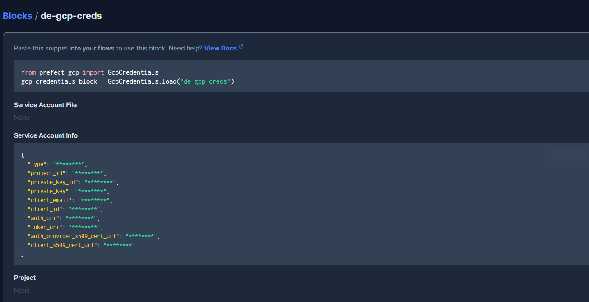
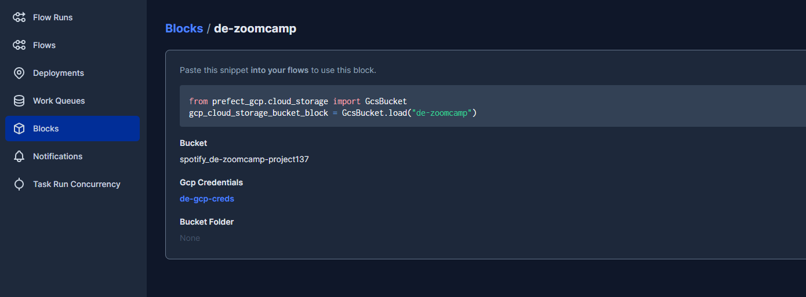
The basic config template is included below for reference :
from prefect_gcp import GcpCredentials
from prefect_gcp.cloud_storage import GcsBucket
# alternative to creating GCP blocks in the UI
# copy your own service_account_info dictionary from the json file you downloaded from google
# IMPORTANT - do not store credentials in a publicly available repository!
credentials_block = GcpCredentials(
service_account_info={} # enter your credentials from the json file
)
credentials_block.save("zoom-gcp-creds", overwrite=True)
bucket_block = GcsBucket(
gcp_credentials=GcpCredentials.load("zoom-gcp-creds"),
bucket="prefect-de-zoomcamp", # insert your GCS bucket name
)
bucket_block.save("zoom-gcs", overwrite=True)Once you are ready to run your flows you can make use of the Prefect UI to visualise the flows by entering the following at the command line:
prefect orion startand then navigating to the dashboard at http://127.0.0.1:4200
I created the following Python script to grab the local csv, clean up using pandas, convert to parquet, and upload to Google Cloud Storage. I ran the file from the command line using :
python etl_web_to_gcs.pyetl_web_to_gcs.py
from pathlib import Path
import pandas as pd
from prefect import flow, task
from prefect_gcp.cloud_storage import GcsBucket
import pyarrow as pa
from random import randint
@task(retries=3)
def fetch(dataset_url: str) -> pd.DataFrame:
"""Read data into pandas DataFrame"""
df = pd.read_csv(dataset_url)
return df
@task(log_prints=True)
def clean(df: pd.DataFrame) -> pd.DataFrame:
"""Some pandas transforms and print basic info"""
df = df.drop(['id', 'album_id', 'artist_ids', 'track_number', 'disc_number', 'time_signature'], axis=1)
df.loc[815351:815360,'year'] = 2018
df.loc[450071:450076,'year'] = 1996
df.loc[459980:459987,'year'] = 1991
df['artists'] = df['artists'].str.strip("['']")
df['danceability'] = df['danceability'].round(2)
df['energy'] = df['energy'].round(2)
df['loudness'] = df['loudness'].round(2)
df['speechiness'] = df['speechiness'].round(2)
df['acousticness'] = df['acousticness'].round(2)
df['instrumentalness'] = df['instrumentalness'].round(2)
df['liveness'] = df['liveness'].round(2)
df['valence'] = df['valence'].round(2)
df["tempo"] = df["tempo"].astype(int)
df['year_date'] = pd.to_datetime(df['year'], format='%Y')
df["duration_s"] = (df["duration_ms"] / 1000).astype(int).round(0)
print(df.head(2))
print(f"columns: {df.dtypes}")
print(f"rows: {len(df)}")
return df
@task()
def write_local(df: pd.DataFrame, dataset_file: str) -> Path:
"""Write DataFrame out locally as parquet file"""
path = Path(f"data/{dataset_file}.parquet")
df.to_parquet(path, compression="gzip")
return path
@task()
def write_gcs(path: Path) -> None:
"""Upload local parquet file to GCS"""
gcs_block = GcsBucket.load("de-zoomcamp")
gcs_block.upload_from_path(from_path=path, to_path=path)
return
@flow()
def etl_web_to_gcs() -> None:
"""The main ETL function"""
dataset_file = "spotify"
dataset_url = "data/spotify.csv"
df = fetch(dataset_url)
df_clean = clean(df)
path = write_local(df_clean,dataset_file)
write_gcs(path)
if __name__ == "__main__":
etl_web_to_gcs()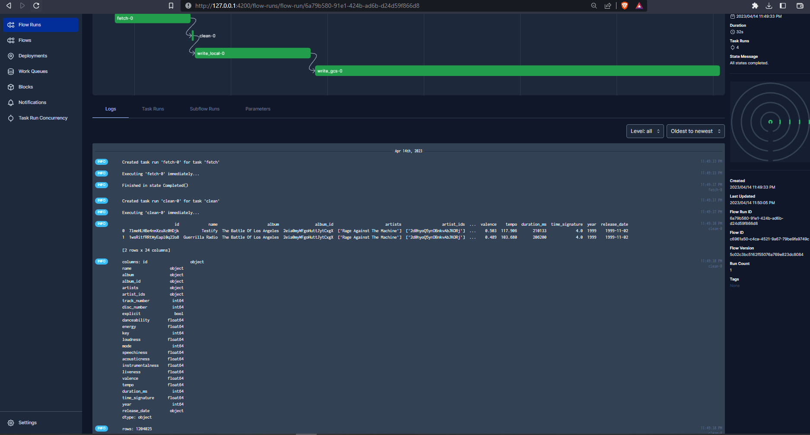
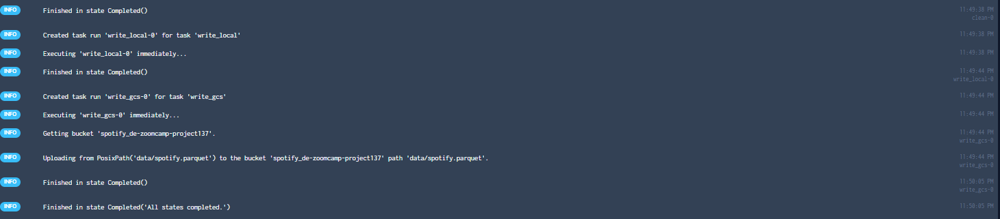
That has completed successfully. The parquet file has been uploaded to our data lake :
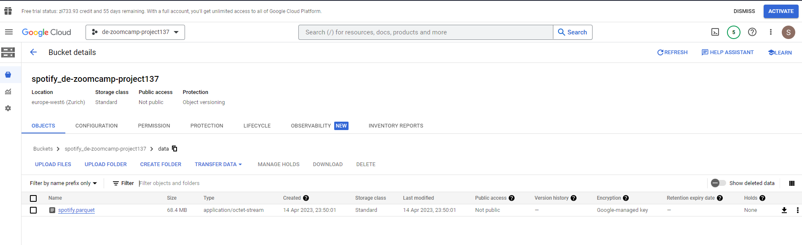
I created the following Python script to take the parquet file from Google Cloud Storage and write to BigQuery as a table, and ran the file from the command line using :
python etl_web_to_gcs.pyetl_gcs_to_bq.py
from pathlib import Path
import pandas as pd
from prefect import flow, task
from prefect_gcp.cloud_storage import GcsBucket
from prefect_gcp import GcpCredentials
@task(retries=3)
def extract_from_gcs() -> Path:
"""Download data from GCS"""
gcs_path = Path(f"data/spotify.parquet")
gcs_block = GcsBucket.load("de-zoomcamp")
gcs_block.get_directory(from_path=gcs_path, local_path=f"./data/")
return Path(f"{gcs_path}")
@task()
def transform(path: Path) -> pd.DataFrame:
"""Print some basic info"""
df = pd.read_parquet(path)
print(df.head(2))
print(f"columns: {df.dtypes}")
print(f"rows: {len(df)}")
return df
@task()
def write_bq(df: pd.DataFrame) -> None:
"""Write DataFrame to BiqQuery"""
gcp_credentials_block = GcpCredentials.load("de-gcp-creds")
df.to_gbq(
destination_table="spotify.spotify_one_point_two_million",
project_id="de-zoomcamp-project137",
credentials=gcp_credentials_block.get_credentials_from_service_account(),
chunksize=500_000,
if_exists="replace",
)
@flow()
def etl_gcs_to_bq():
"""Main ETL flow to load data into Big Query"""
path = extract_from_gcs()
df = transform(path)
write_bq(df)
if __name__ == "__main__":
etl_gcs_to_bq()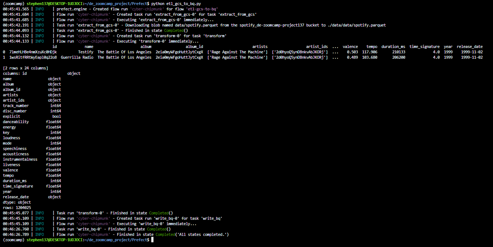
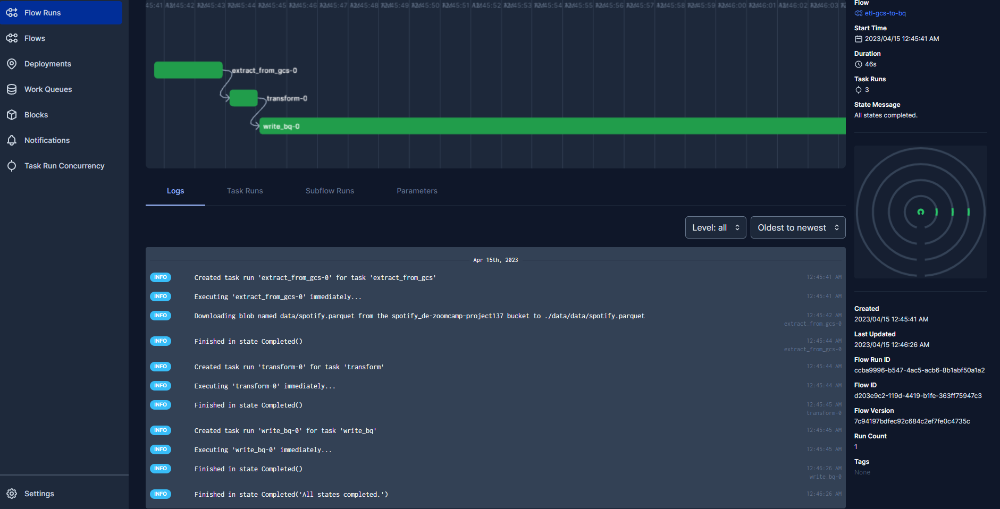
That has also completed successfully. A table has been created in BigQuery from the data held in Google Cloud Storage :
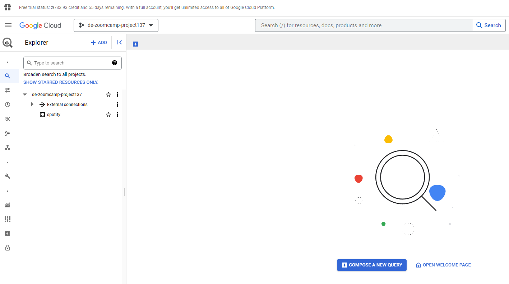
4. Data Transformation
Set up dbt cloud within BigQuery
We need to create a dedicated service account within Big Query to enable communication with dbt cloud.
- Open the BigQuery credential wizard to create a service account in your project :
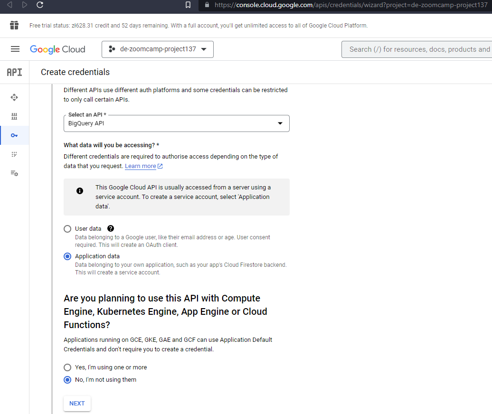
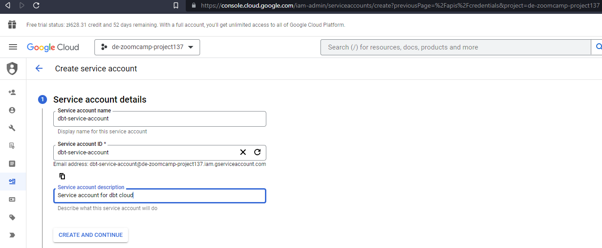
- You can either grant the specific roles the account will need or simply use
BigQuery Admin, as you’ll be the sole user of both accounts and data.
Note: if you decide to use specific roles instead of BQ Admin, some users reported that they needed to add also viewer role to avoid encountering denied access errors.
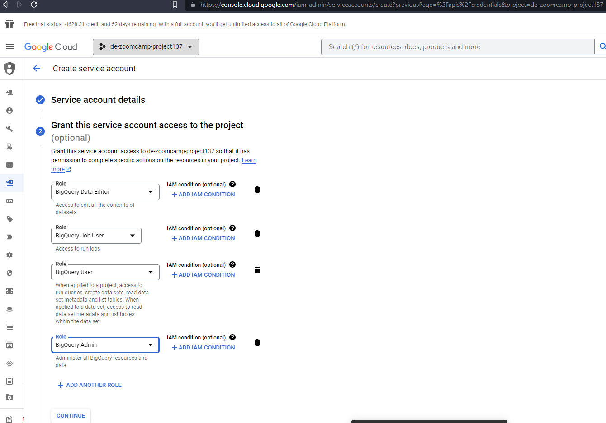
- Now that the service account has been created we need to add and download a JSON key, go to the keys section, select “create new key”. Select key type JSON and once you click on
CREATEit will get inmediately downloaded for you to use.
Create a dbt cloud project
- Create a dbt cloud account from their website (free for freelance developers)
- Once you have logged in you will be prompted to
Complete Project Setup - Naming your project - a default name
Analyticsis given - Choose BigQuery as your data warehouse:
- Upload the key you downloaded from BigQuery. This will populate most fields related to the production credentials.
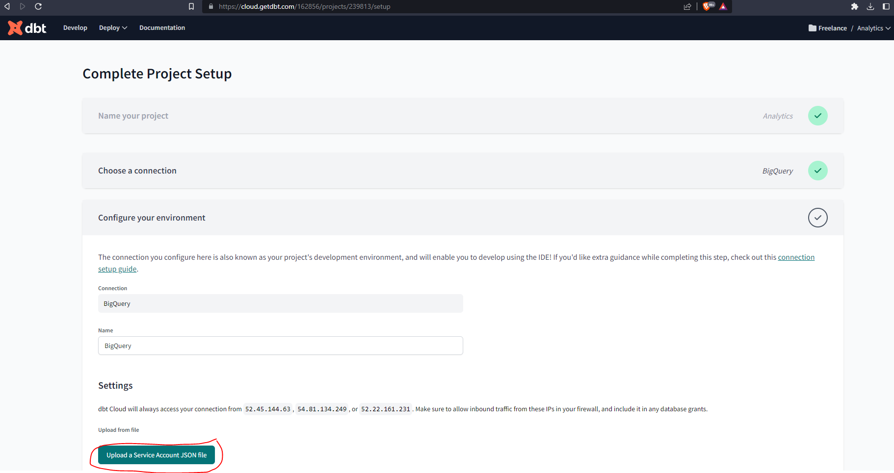
Scroll down to the end of the page, set up your development credentials, and run the connection test and hit Next:
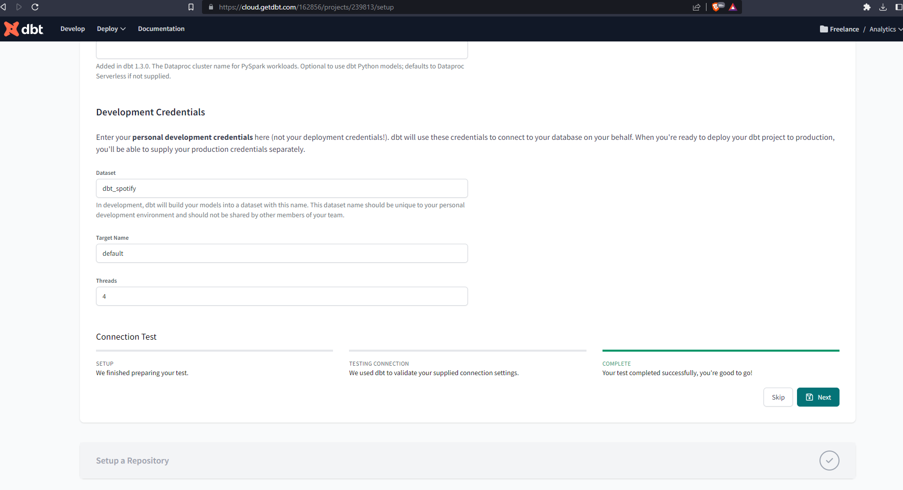
Add GitHub repository
- Select git clone and paste the SSH key from your repo. Then hit
Import
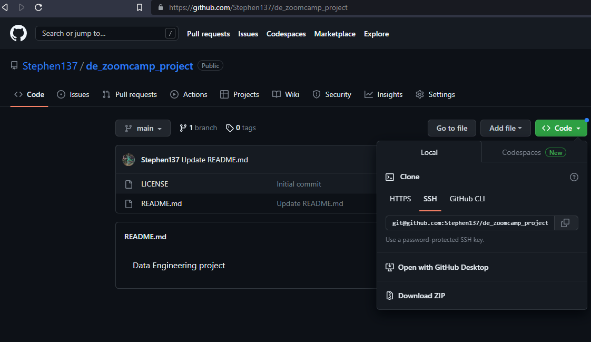
- You will get a deploy key :
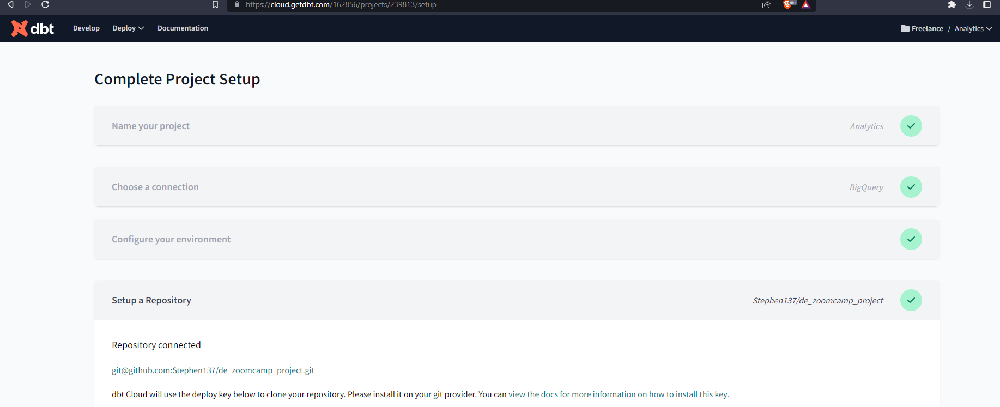
- Head to your GH repo and go to the settings tab. Under security you’ll find the menu deploy keys. Click on
Add deploy keyand paste the deploy key provided by dbt cloud. Make sure to tick on “write access”.
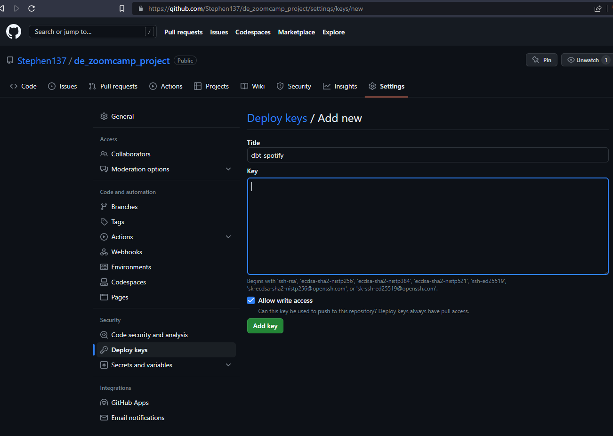
For a detailed set up guide see here.
Initialize dbt project
This builds out your folder structure with example models.
Make your initial commit by clicking Commit and sync. Use the commit message “initial commit” and click Commit. Note that the files are read-only and you have to Create branch before you can edit or add new files :
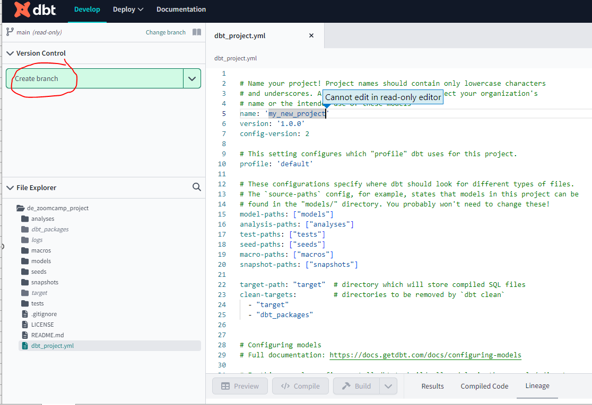
Once you have created a branch you can edit and add new files. Essentially we only need three files to build our model :
dbt.project.yml
The basic config below can be tailored to meet your own needs. The key fields are :
name <spotify_dbt> This will be the name of the dataset created in BiqQuery on successful run of the transformation model
models:
<spotify_dbt> This should match the name specified above
# Name your project! Project names should contain only lowercase characters
# and underscores. A good package name should reflect your organization's
# name or the intended use of these models
name: 'spotify_dbt' # This will be the name of the dataset dbt will create in BigQuery
version: '1.0.0'
config-version: 2
# This setting configures which "profile" dbt uses for this project.
profile: 'default'
# These configurations specify where dbt should look for different types of files.
# The `source-paths` config, for example, states that models in this project can be
# found in the "models/" directory. You probably won't need to change these!
model-paths: ["models"]
analysis-paths: ["analyses"]
test-paths: ["tests"]
seed-paths: ["seeds"]
macro-paths: ["macros"]
snapshot-paths: ["snapshots"]
target-path: "target" # directory which will store compiled SQL files
clean-targets: # directories to be removed by `dbt clean`
- "target"
- "dbt_packages"
# Configuring models
# Full documentation: https://docs.getdbt.com/docs/configuring-models
# In this example config, we tell dbt to build all models in the example/ directory
# as tables. These settings can be overridden in the individual model files
# using the `{{ config(...) }}` macro.
models:
spotify_dbt:
# Applies to all files under models/.../
staging:
materialized: viewschema.yml
Note that this file also includes the source i.e. the location of the data that the transforms included in our model are to be performed on :
name : <spotify> Choose a name for this source variable, This will be referenced in the model.sql file
database: <de-zoomcamp-project137> BigQuery project reference
version: 2
sources:
- name: spotify # Choose a name. This will be the 'source' referred to in the
database: de-zoomcamp-project137 # BigQuery project reference
tables:
- name: spotify_one_point_two_million # Choose a name for the table to be created in BigQuery
models:
- name: spotify_one_point_two_million
description: >
Curated by Rodolfo Gigueroa, over 1.2 million songs downloaded from the MusicBrainz catalog and 24 track features obtained using the Spotify
API.
columns:
- name: id
description: >
The base-62 identifier found at the end of the Spotify URI for an artist, track, album, playlist, etc. Unlike a Spotify URI, a Spotify ID
does not clearly identify the type of resource; that information is provided elsewhere in the call.
- name: name
description: The name of the track
- name: album
description: The name of the album. In case of an album takedown, the value may be an empty string.
- name: album_id
description: The Spotify ID for the album.
- name: artists
description: The name(s) of the artist(s).
- name: artist_ids
description: The Spotify ID for the artist(s).
- name: track_number
description: The number of the track. If an album has several discs, the track number is the number on the specified disc.
- name: disc_number
description: The disc number (usually 1 unless the album consists of more than one disc).
- name: explicit
description: Whether or not the track has explicit lyrics ( true = yes it does; false = no it does not OR unknown).
- name: danceability
description: >
Danceability describes how suitable a track is for dancing based on a combination of musical elements including tempo, rhythm stability,
beat strength, and overall regularity. A value of 0.0 is least danceable and 1.0 is most danceable.
- name: energy
description: >
Energy is a measure from 0.0 to 1.0 and represents a perceptual measure of intensity and activity. Typically, energetic tracks feel fast,
loud, and noisy. For example, death metal has high energy, while a Bach prelude scores low on the scale. Perceptual features contributing
to this attribute include dynamic range, perceived loudness, timbre, onset rate, and general entropy.
- name: key
description: >
The key the track is in. Integers map to pitches using standard Pitch Class notation. E.g. 0 = C, 1 = C♯/D♭, 2 = D, and so on. If no key
was detected, the value is -1.
- name: loudness
description: >
The overall loudness of a track in decibels (dB). Loudness values are averaged across the entire track and are useful for comparing
relative loudness of tracks. Loudness is the quality of a sound that is the primary psychological correlate of physical strength
(amplitude). Values typically range between -60 and 0 db.
- name: mode
description: >
Mode indicates the modality (major or minor) of a track, the type of scale from which its melodic content is derived. Major is represented
by 1 and minor is 0.
- name: speechiness
description: >
Speechiness detects the presence of spoken words in a track. The more exclusively speech-like the recording (e.g. talk show, audio book,
poetry), the closer to 1.0 the attribute value. Values above 0.66 describe tracks that are probably made entirely of spoken words. Values
between 0.33 and 0.66 describe tracks that may contain both music and speech, either in sections or layered, including such cases as rap
music. Values below 0.33 most likely represent music and other non-speech-like tracks.
- name: acousticness
description: A confidence measure from 0.0 to 1.0 of whether the track is acoustic. 1.0 represents high confidence the track is acoustic.
- name: instrumentalness
description: >
Predicts whether a track contains no vocals. "Ooh" and "aah" sounds are treated as instrumental in this context. Rap or spoken word tracks
are clearly "vocal". The closer the instrumentalness value is to 1.0, the greater likelihood the track contains no vocal content. Values above
0.5 are intended to represent instrumental tracks, but confidence is higher as the value approaches 1.0.
- name: liveness
description: >
Detects the presence of an audience in the recording. Higher liveness values represent an increased probability that the track was performed
live. A value above 0.8 provides strong likelihood that the track is live.
- name: valence
description: A measure from 0.0 to 1.0 describing the musical positiveness conveyed by a track. Tracks with high valence sound more positive (e.g. happy, cheerful, euphoric), while tracks with low valence sound more negative (e.g. sad, depressed, angry).
- name: tempo
description: >
The overall estimated tempo of a track in beats per minute (BPM). In musical terminology, tempo is the speed or pace of a given piece and
derives directly from the average beat duration.
- name: duration_ms
description: The duration of the track in milliseconds.
- name: time_signature
description: >
An estimated time signature. The time signature (meter) is a notational convention to specify how many beats are in each bar (or measure).
The time signature ranges from 3 to 7 indicating time signatures of "3/4", to "7/4".
- name: year
description: The year in which the track was released
- name: release_date
description: Release date of the track in the format 2023-04-17spotify_one_point_two_million.sql
Although this is a .sql file this is actually our transformation model. Note the first line configuration overrides the materialized setting that I configured in my dbt.project.yml file.
Note also the following :
FROM {{ source('spotify', 'spotify_one_point_two_million')}}This specifies that dbt will apply transformations on my dataset in BiqQuery named spotify and specifically, on the table named spotify_one_point_two_million.
{{ config(materialized='table') }}
SELECT
-- identifiers
name,
album,
artists,
explicit,
danceability,
energy,
{{ get_key_description('key') }} AS key_description,
loudness,
{{ get_modality_description('mode') }} AS modality_description,
speechiness,
acousticness,
instrumentalness,
liveness,
valence,
tempo,
duration_s,
year_date,
CASE
WHEN year_date BETWEEN '1900-01-01 00:00:00 UTC' AND '1909-12-31 00:00:00 UTC' THEN 'Naughts'
WHEN year_date BETWEEN '1910-01-01 00:00:00 UTC' AND '1919-12-31 00:00:00 UTC' THEN 'Tens'
WHEN year_date BETWEEN '1920-01-01 00:00:00 UTC' AND '1929-12-31 00:00:00 UTC' THEN 'Roaring Twenties'
WHEN year_date BETWEEN '1930-01-01 00:00:00 UTC' AND '1939-12-31 00:00:00 UTC' THEN 'Dirty Thirties'
WHEN year_date BETWEEN '1940-01-01 00:00:00 UTC' AND '1949-12-31 00:00:00 UTC' THEN 'Forties'
WHEN year_date BETWEEN '1950-01-01 00:00:00 UTC' AND '1959-12-31 00:00:00 UTC' THEN 'Fabulous Fifties'
WHEN year_date BETWEEN '1960-01-01 00:00:00 UTC' AND '1969-12-31 00:00:00 UTC' THEN 'Swinging Sixties'
WHEN year_date BETWEEN '1970-01-01 00:00:00 UTC' AND '1979-12-31 00:00:00 UTC' THEN 'Seventies'
WHEN year_date BETWEEN '1980-01-01 00:00:00 UTC' AND '1989-12-31 00:00:00 UTC' THEN 'Eighties'
WHEN year_date BETWEEN '1990-01-01 00:00:00 UTC' AND '1999-12-31 00:00:00 UTC' THEN 'Nineties'
WHEN year_date BETWEEN '2000-01-01 00:00:00 UTC' AND '2009-12-31 00:00:00 UTC' THEN 'Noughties'
WHEN year_date BETWEEN '2010-01-01 00:00:00 UTC' AND '2019-12-31 00:00:00 UTC' THEN 'Teens'
WHEN year_date = '2020-01-01 00:00:00 UTC' THEN '2020'
END AS Decade,
CASE
WHEN valence > 0.5 THEN 'Happy'
WHEN valence < 0.5 THEN 'Sad'
ELSE 'Ambivalent'
END AS Happy_Sad
FROM {{ source('spotify', 'spotify_one_point_two_million')}}You might wonder what this syntax is :
{{ get_key_description('key') }} AS key_description, Macros in Jinja are pieces of code that can be reused multiple times – they are analogous to “functions” in other programming languages, and are extremely useful if you find yourself repeating code across multiple models. Macros are defined in .sql files :
get_key_description
{#
This macro returns the description of the key
#}
{% macro get_key_description(key) -%}
case {{ key }}
when 0 then 'C'
when 1 then 'C#'
when 2 then 'D'
when 3 then 'D#'
when 4 then 'E'
when 5 then 'F'
when 6 then 'F#'
when 7 then 'G'
when 8 then 'G#'
when 9 then 'A'
when 10 then 'A#'
when 11 then 'B'
end
{%- endmacro %}get_modality_description
{#
This macro returns the description of the modality
#}
{% macro get_modality_description(mode) -%}
case {{ mode }}
when 0 then 'Minor'
when 1 then 'Major'
end
{%- endmacro %}Now that we have our files set up we are ready to run our model. We can see from the lineage that all the connections are complete :
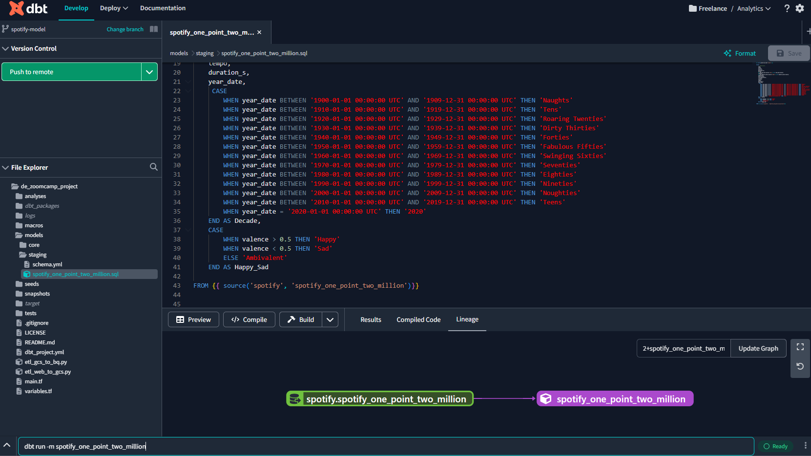
We can run the model from the dbt console using :
dbt run -m <model_name.sql>And we can see from the system log that the run was successful :
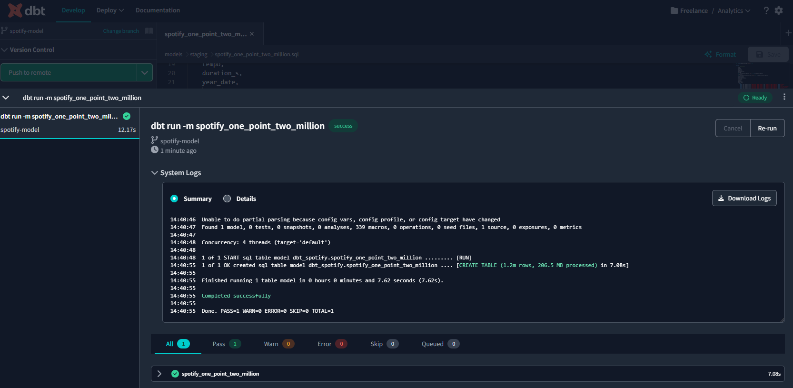
And we have our table created in Big Query with 1,204,025 rows as expected.
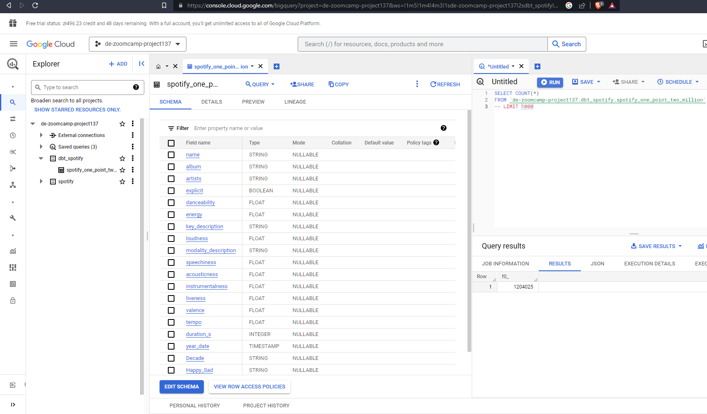
5. Visualization
We’ve come a long way since downloading our raw csv file from Kaggle. Our journey is almost over. It’s time now to visualize our data and gather some insights. For this purpose I will be using Looker Studio. This will allow us to connect to our newly created table in BigQuery and create a Dashboard.
The first thing we need to do is create a data source. There are 23 different connectors at the time of writing. We will be using BigQuery :
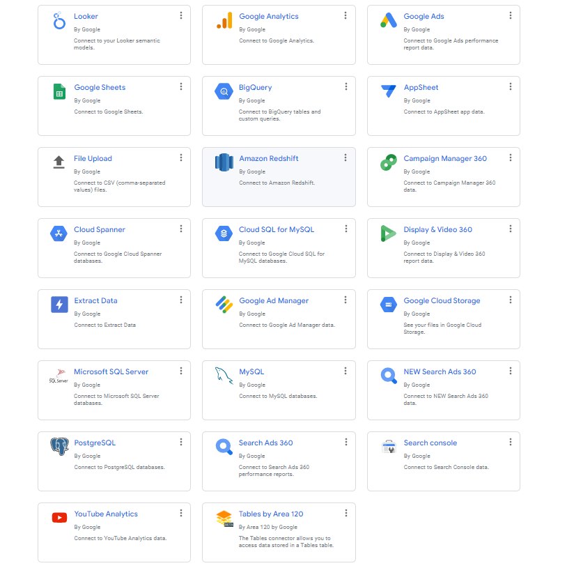
Our recent dataset and table are sitting there ready for connection :
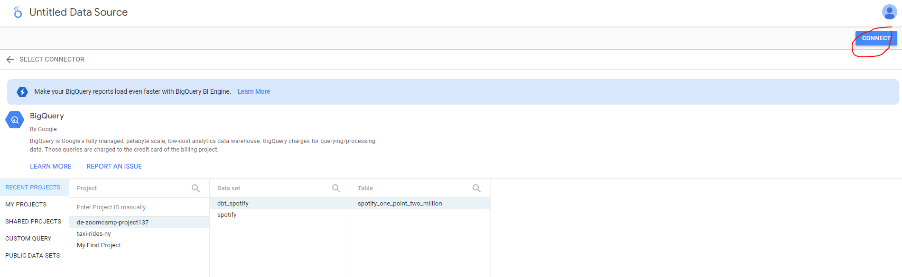
Hit CONNECT and we see our fields or columns are there with default settings attached which can be modified if required. Finally hit CREATE REPORT and you are taken to a blank canvass dashboard where the magic begins :)
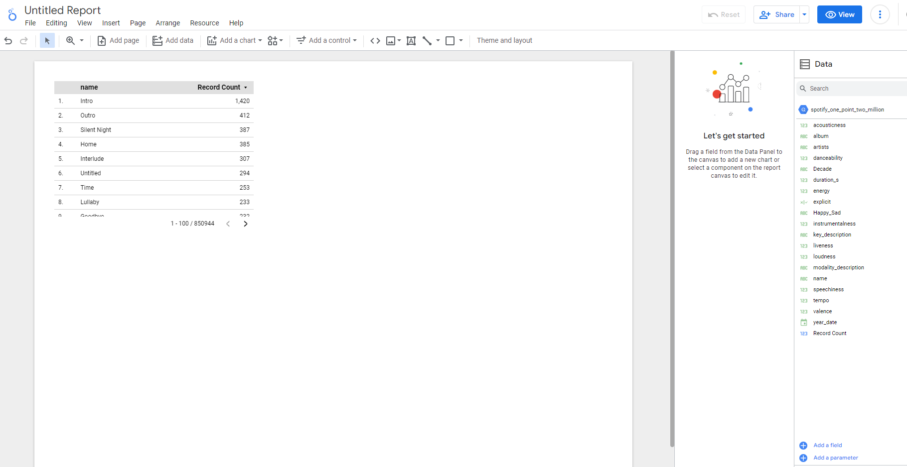
For a complete guide you can check out the Looker Documentation, but the console is very intuitive, and a few strokes of the brush (or clicks of the keyboard) and I was able to produce this dashboard (screenshot included below if you can’t access the link).
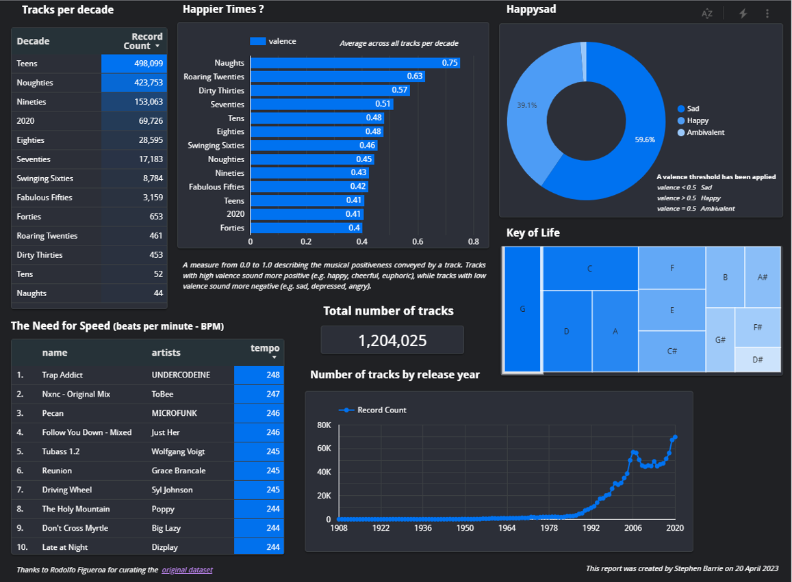